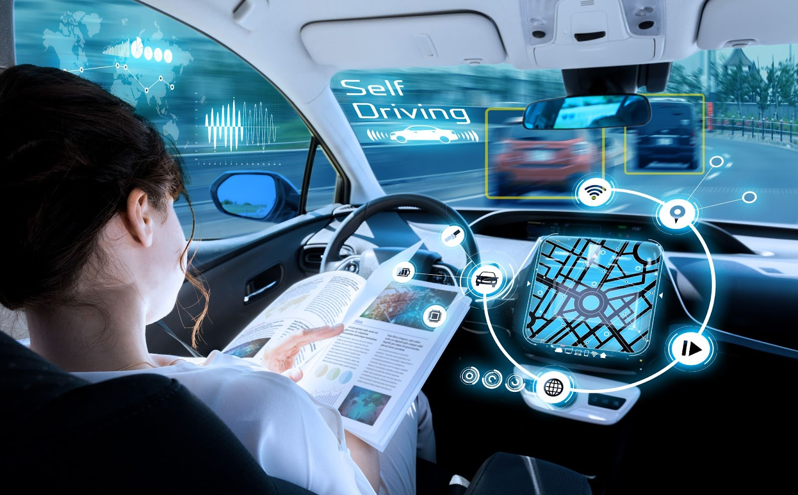
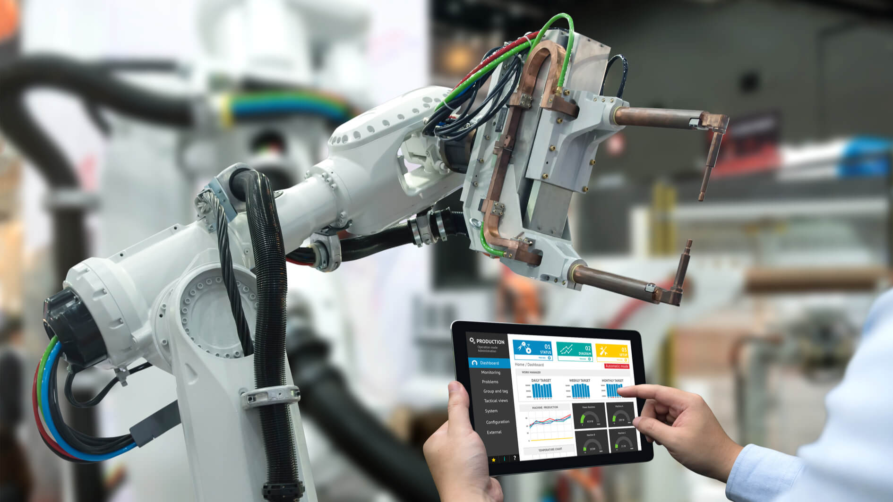
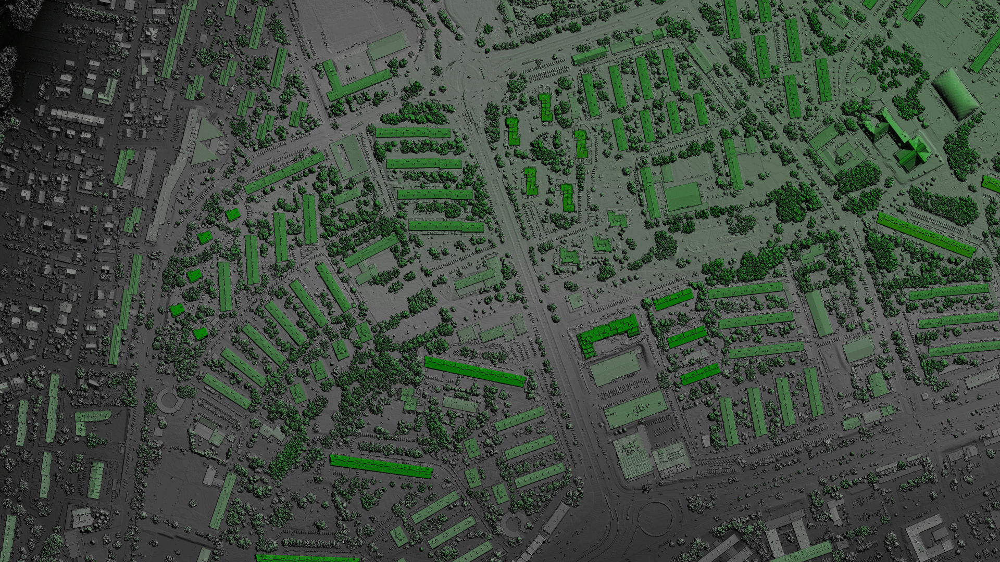
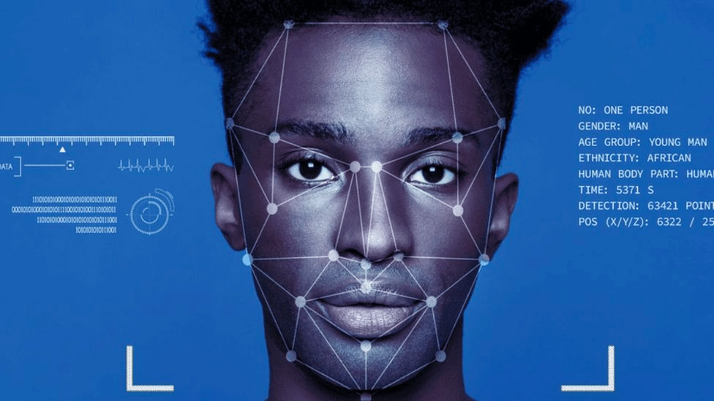
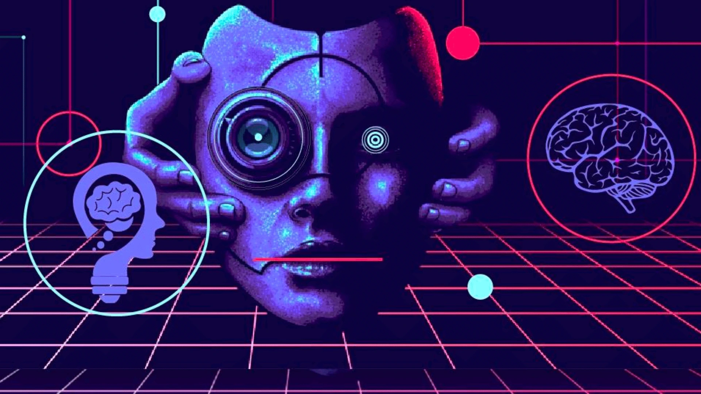
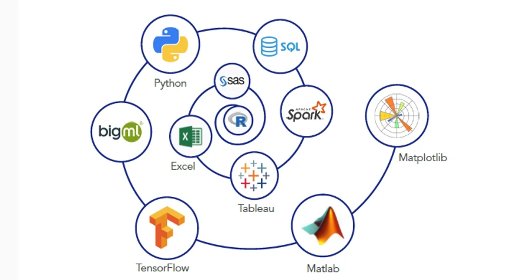
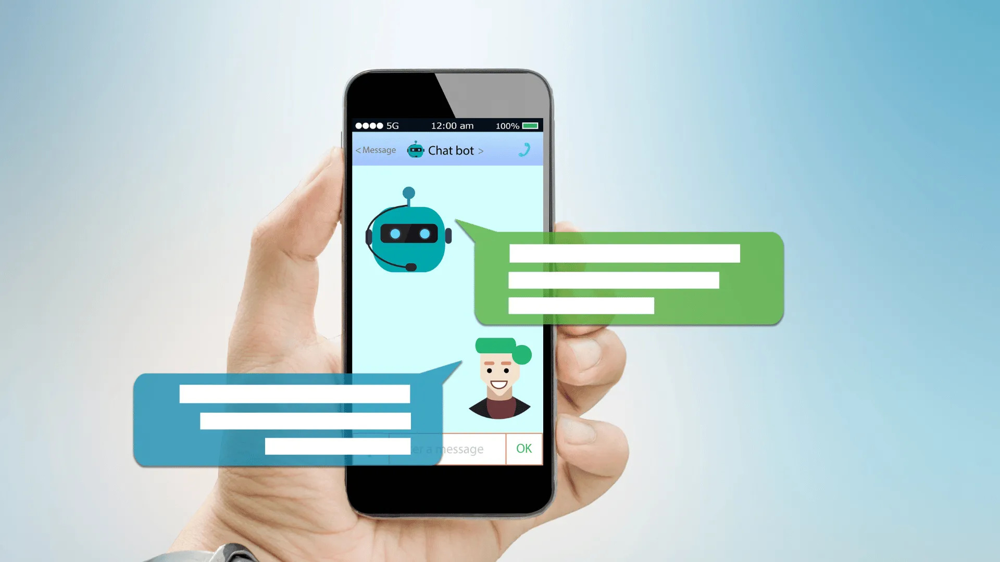
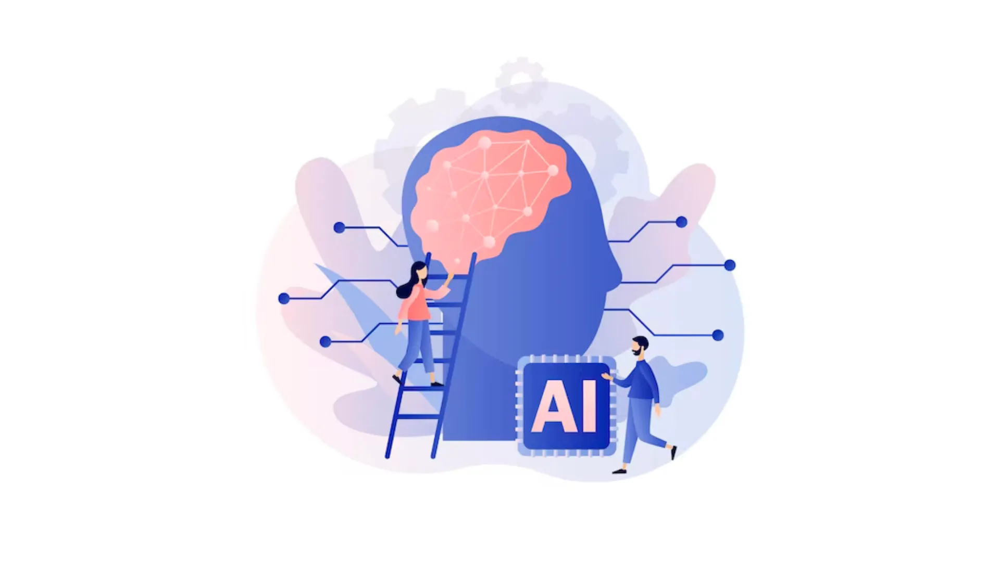

Blog
Tulisan dari Blog Braincore
Dipost 6 Januari 2026 oleh Safrizal Ardana Ardiyansa
Revolusi Belanja Online: Pengalaman Belanja yang Dipersonalisasi dengan Computer Vision
Bagaimana Computer Vision merevolusi pengalaman belanja online dengan personalisasi yang lebih baik... Read More
Dipost 6 Januari 2026 oleh Eric Julianto
Pengantar ke Natural Language Processing: Komputer dan Bahasa Manusia
Memahami dasar-dasar Natural Language Processing (NLP) dan bagaimana komputer memproses serta memahami... Read More

Dipost 6 Januari 2026 oleh Dian Alhusari
Penerapan Computer Vision dalam Kendaraan Otonom: Visi Masa Depan Transportasi
Bagaimana teknologi Computer Vision memungkinkan kendaraan otonom untuk beroperasi secara mandiri... Read More
Dipost 6 Januari 2026 oleh Safrizal Ardana Ardiyansa
Pencitraan Komputer Dalam Otomatisasi Produksi Untuk Perusahaan
Penerapan teknologi Pencitraan Komputer (Computer Vision) untuk meningkatkan efisiensi, akurasi... Read More
Dipost 6 Januari 2026 oleh Eric Julianto
Mendeteksi Anomali dengan Computer Vision
Pemanfaatan kecerdasan buatan dari computer vision untuk mendeteksi anomali secara efisien... Read More

Dipost 6 Januari 2026 oleh Dian Alhusari
Kecerdasan Visual dalam Manufaktur: Bagaimana Computer Vision Mengubah Proses Produksi
Penerapan Computer Vision dalam industri manufaktur untuk meningkatkan efisiensi, kontrol kualitas... Read More
Dipost 6 Januari 2026 oleh Safrizal Ardana Ardiyansa
Keamanan Visual: Bagaimana Computer Vision Meningkatkan Pengawasan dan Keamanan Fisik
Bagaimana teknologi Computer Vision meningkatkan efektivitas pengawasan keamanan fisik melalui... Read More

Dipost 6 Januari 2026 oleh Eric Julianto
Computer Vision untuk Analisis Data Geospasial: Membuka Wawasan dari Gambar Satelit
Pemanfaatan Computer Vision dalam menganalisis data geospasial dari gambar satelit untuk berbagai... Read More
Dipost 6 Januari 2026 oleh Eric Julianto
Computer Vision dalam Penginderaan Medis: Diagnosa yang Cepat dan Akurat
Teknologi Computer Vision kini telah merambah dunia medis dan kesehatan ... Read More

Dipost 18 Januari 2025 oleh Eric Julianto
Menerapkan Computer Vision dalam Pengenalan Wajah: Teknologi dan Kasus Penggunaan
Computer Vision, cabang AI, memungkinkan komputer 'melihat' dan memahami visual ... Read More

Dipost 17 Januari 2025 oleh Eric Julianto
Bagaimana AI Melihat dan Memahami Gambar
Computer Vision, teknologi AI yang berkembang pesat, memungkinkan mesin menganalisis gambar dan video seperti ... Read More

Dipost 16 Januari 2025 oleh Eric Julianto
Tools Seorang Data Scientist
Data scientist adalah profesi populer yang fokus pada pengolahan dan analisis data untuk menghasilkan informasi berharga bagi kemajuan ... Read More
Dipost 15 Januari 2025 oleh Alfizdiana Sholikhah
Bagaimana Recommendation System berfungsi dalam memberikan rekomendasi kepada pengguna?
Sistem Rekomendasi memberikan saran personal kepada pengguna berdasarkan minat, preferensi, dan ... Read More
Dipost 14 Januari 2025 oleh Denis Setiawan
AI dalam Pertanian: Meningkatkan Hasil dan Efisiensi
AI membawa transformasi besar di sektor pertanian dengan analisis data otomatis, meningkatkan ... Read More
Dipost 13 Januari 2025 oleh Dian Alhusari
Kecerdasan Buatan dan Keamanan Siber
Kecerdasan buatan adalah suatu bidang komputer yang menekankan pembuatan mesin yang dapat ... Read More

Dipost 7 November 2023 oleh Jemmy Febryan
Chatbot: Mendekati Pelanggan dengan Kecerdasan Buatan
Seiring dengan perkembangan teknologi, penggunaan chatbot sebagai alat ... Read More
Dipost 15 Oktober 2023 oleh Nadea Putri Nur Fauzi
Prediksi dan Peramalan Bisnis dengan Machine Learning
Machine learning telah menjadi teknologi yang menonjol dalam era digital ini ..... Read More
Dipost 10 Oktober 2023 oleh Eric Julianto
Ethical AI: Tantangan dan Solusi
Hari ini, kecerdasan buatan (AI) telah menjadi bagian yang tidak terpisahkan dari kehidupan manusia. Dengan kemajuan ..... Read More
Dipost 5 Oktober 2023 oleh Eric Julianto
Meningkatkan Daya Saing UMKM dengan Kecerdasan Buatan (AI)
Usaha Mikro, Kecil, dan Menengah (UMKM) adalah tulang punggung ekonomi di banyak ..... Read More
Dipost 14 September 2023 oleh Eric Julianto
Pemanfaatan Machine Learning dalam Marketing
Marketing atau pemasaran adalah salah satu elemen utama dalam menjalankan usaha yang sustainable ..... Read More

Dipost 14 September 2023 oleh Eric Julianto
Apa itu AI?
Kecerdasan Buatan, atau sering disingkat AI (Artificial Intelligence), adalah bidang dalam ilmu .... Read More